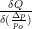
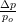

3.5 Processing
This section comprises all the input blocks that do some kind of pre– or post–processing.
3.5.1 Linear Optics Calculation
Description The linear optics calculation input block is used to make a printout of all linear parameters
(magnet lengths, β and α functions, tunes, dispersion and closed orbit) in the horizontal and vertical
planes at the end of each element or linear block. The number of elements or blocks can be
chosen.
Keyword LINE
Number of data lines variable but at least 1
Format
- first data line: mode number–of–blocks ilin ntco E_I E_II
- other data lines: name(1), …, name(nlin)
-
mode
- “ELEMENT” for a printout after each single element ( 3.2.1); “BLOCK” for a printout after
each structure block ( 3.2.2)
-
number–of–blocks
- (integer) The number of the blocks in the structure to which the linear parameter
will be printed. If this number is set to zero or is larger than the number of blocks, the complete
structure will be calculated.
-
ilin
- (integer) Logical switch to calculate the traditional linear optics calculation in 4D (1 = ilin) and
with the DA approach 6D (2 = ilin).
-
ntco
- (integer) A switch to write out linear coupling parameters.
- ntco = 0 : no write–out
- ntco ≠ 0 : write–out of all linear coupled (4D) parameters including the coupling angle.
These parameters (name, longitudinal position, the phase advances at that location, 4 β–,
α– and γ–functions, 4 angles for coordinates and momenta respectively, plus the coupling
angle [rad]) are written in binary format on file # 11.
-
E_I, E_II
- (floats) The two eigen–emittances to be chosen to determine the coupling angle. They are typically
set to be equal.
-
names
- (char) For nlin (≤ nele) element– and block names the linear parameters are printed whenever they
appear in the accelerator structure.
Remarks
- To make this block work the Tracking Parameter block ( 3.6.1) has to used as well.
- When the “ELEMENT 0” option is used a file unit # 34 is written with the longitudinal position,
name, element type, multipole strength, β functions and phase advances in the horizontal and
vertical phase space respectively. This file is used as input for the “SODD” program [20] to
calculate detuning and distortion terms in first and second order. A full program suite can be
found at: /afs/cern.ch/group/si/slap/share/sodd
- If the “BLOCK” option has been used, the tunes may be wrong by a multiple of 1/2. This option
is not active in the DA part (2 = ilin), which also ignores the (NTCO) option.
3.5.2 Tune Variation
Description This input block initializes a tune adjustment with zero length quadrupoles. This is
normally done with two families of focusing and defocusing quadrupoles. It may be necessary, however, to
have a fixed phase advance between certain positions in the machine. This can be done with this block by
splitting the corresponding family into two sub–families which then are adjusted to give the desired phase
advance.
Keyword TUNE
Number of data lines 2 or 4
Format
- data lines 1: name1 Qx iqmod6
- data lines 2: name2 Qy
- data lines 3 and 4, optional: name3 ΔQ and name4 name5 respectively
-
name1, name2
- Names of focusing and defocusing quadrupole families respectively (in the single
element list ( 3.2.1.1)
-
Qx, Qy
- (floats) Horizontal and vertical tune including the integer part
-
iqmod6
- (integer) Logical switch to calculate the tunes in the traditional manner (1 = iqmod6) and
with the DA approach including the beam-beam kick (2 = iqmod6).
-
name3
- Name of the second sub–family, where the first sub–family is one of the above (name1 or
name2) This second sub–family replaces the elements of the first sub–family between the
positions marked by name4 and name5.
-
ΔQ
- Extra phase advance including the integer part (horizontal or vertical depending on the first
sub–family) between the positions in the machine marked by name4 and name5
-
name4, name5
- Two markers in the machine for the phase advance ΔQ with the elements of the second
sub–family between them
Remark The integer has to be included as the full phase advance around the machine is calculated by
the program.
3.5.3 Chromaticity Correction
Description The chromaticity can be adjusted to desired values with two sextupole family using this
input block.
Keyword CHRO
Number of data lines 2
Format data lines 1: name1 Q′x ichrom
Format data lines 2: name2 Q′y
-
name1/2
- Names (in the single element list ( 3.2.1.2) of the two sextupole families
-
Q′
- Desired values of the chromaticity: Q′ = .
-
ichrom
- (integer) Logical switch to calculate the traditional chromaticity calculation (1 = ichrom) and
with the DA approach including the beam-beam kick (2 = ichrom).
Remark To make the chromaticity correction work well a small momentum spread is required (DE0 in
table ( 3.1)). It sometimes is required to optimize this spread.
3.5.4 Orbit Correction
Description Due to dipole errors in a real accelerator a closed orbit different from the beam axis
is unavoidable. Even after careful adjustment one always will be left over with some random
deviation of the closed orbit around the zero position. A closed orbit is introduced by nonzero
strengths of b1 and a1 components of the multipole block ( 3.3.1), horizontal and vertical dipole
kicks ( 3.2.1.2) or displacements of nonlinear elements ( 3.2.4). This input data block allows
the correction of a such a random distributed closed orbit using he first two types in a “most
effective corrector strategy” [24]. For that purpose correctors have to be denoted by “HCOR= ”
and “VCOR= ” and monitors by “HMON= ” and “VMON= ” for the horizontal and vertical
plane respectively. After correction the orbit is scaled to the desired r.m.s. values unless they are
zero.
On file unit 28 the horizontal orbit displacement, measured at the horizontal monitors, will be written
together with the monitor number, on file unit 29 the same is done for the vertical closed orbit
displacement.
Keyword ORBI
Number of data lines variable but at least 1
Format
- first data line: sigmax sigmay ncorru ncorrep
- other data lines: “HCOR= ” namec or “HMON= ” namem
or “VCOR= ” namec or “VMON= ” namem
-
sigmax, sigmay
- Desired r.m.s.–values of the randomly distributed closed orbit
-
ncorru
- Number of correctors to be used
-
ncorrep
- Number of corrections
If ncorrep=0 the correction is iterated until ITCO (see table 3.1) iterations or after the both
desired r.m.s.–values have been reached.
-
“HCOR= ” namec
- Horizontal correction element of name namec
-
“HMON= ” namem
- Horizontal monitor for the closed orbit of name namem
-
“VCOR= ” namec
- Vertical correction element of name namec
-
“VMON= ” namem
- Vertical monitor for the closed orbit of name namem
Remarks
- Elements can have only one extra functionality: either horizontal corrector, horizontal monitor,
vertical corrector or vertical monitor. If the number of monitors in a plane is smaller than the
number of correctors it is likely to encounter numerical problems.
- The “HCOR= ”, “HMON= ”, “VCOR= ” and “VMON= ” must be separated from the following
name by at least one space.
3.5.5 Decoupling of Motion in the Transverse Planes
Description Skew–quadrupole components in the lattice create a linear coupling between the
transverse planes of motion. A decoupling can be achieved with this block using four independent
families of skew–quadrupoles, which cancel the off–diagonal parts of the transfer map. As these
skew–quadrupoles also influence the tunes an adjustment of the tunes is performed at the same
time.
Keyword DECO
Number of data lines 3
Format
- first data line: name1,name2,name3,name4
- data lines 2 and 3: name5 Qx and name6 Qy respectively
-
name1,2,3,4
- Names of the four skew–quadrupole families
-
name5, name6
- Names of focusing and defocusing quadrupole families respectively (in the single
element list ( 3.2.1.1)
-
Qx, Qy
- (floats) Horizontal and vertical tune including the integer part
Remark A decoupling can also be achieved by compensating skew–resonances ( 3.5.8). The two
approaches, however, are not always equivalent. In the resonance approach the zeroth harmonic is
compensated, whilst a decoupling also takes into account the higher–order terms.
3.5.6 Sub–resonance Calculation
Description First order resonance widths of multipoles from second to ninth order are calculated
following the approach of Guignard [10]. This includes resonances, which are a multiple of two lower than the
order of the multipole. The first order detuning including feed–down from closed orbit is calculated from all
multipoles up to to tenth order.
Keyword SUBR
Number of data lines 1
Format n1 n2 Qx Qy Ax Ay Ip length
-
n1, n2
- (integers) Lowest and highest order of the resonance
-
Qx, Qy
- Horizontal and vertical tune including the integer part
-
Ax, Ay
- Horizontal and vertical amplitudes in mm
-
Ip
- (integer) Is a switch to change the nearest distance to the resonance e = nxQx + nyQy. In cases of
structure resonances a change of p by one unit may be useful.
- ip = 0 : e is unchanged
- ip = 1 : (e ± 1) = nxQx + nyQy − (p ± 1)
-
length
- Length of the accelerator in meters
3.5.7 Search for Optimum Places to Compensate Resonances
Description To be able to compensate a specific resonance one has to know how a correcting multipole
affects the cosine and sine like terms of the resonance width at a given position in the ring. This input data
block can be used to find best places for the compensation of up to three different resonances, by
calculating the contribution to the resonance width for a variable number of positions. For each
position the effect of a fixed and small change of magnetic strength on those resonance widths is
tested.
Keyword SEAR
Number of data lines variable but at least 2
Format
- data line 1: Qx Qy Ax Ay length
- data line 2: npos n ny1 ny2 ny3 ip1 ip2 ip3 (integers)
- data lines from 3 on: name1, …, namen
-
Qx, Qy
- Horizontal and vertical tune including the integer part
-
Ax, Ay
- Horizontal and vertical amplitudes in mm
-
length
- Length of the accelerator in m
-
npos
- Number of positions to be checked
-
n
- Order of the resonance
-
ny1, ny2, ny3
- Define three resonances of order n via : nxQx + nyQy = p with |nx| + |ny| = n
-
ip1,ip2,ip3
- The distance to a resonance is changed by an integer ip for each of the three resonances:
e = nxQx + nyQy − (p + ip).
-
namei
- i’th name of a multipole of order n , which has to appear in the single element list ( 3.2.1.2)
3.5.8 Resonance Compensation
Description The input block allows the compensation of up to three different resonances of order n
simultaneously the chromaticity and the tunes can be adjusted. For mostly academic interest there is also the
possibility to consider sub–resonances which come from multipoles which are a multiple of 2 larger than the
resonance order n. However, it must be stated that the sub–resonances depend differently on the
amplitude compared to resonances where the order of the resonances is the same as that of the
multipoles.
Keyword RESO
Number of data lines 6
Format
- data line 1: nr n ny1 ny2 ny3 ip1 ip2 ip3 (integers)
- data line 2: nrs ns1 ns2 ns3 (integers)
- data line 3: length Qx Qy Ax Ay
- data line 4: name1, …, name6
- data line 5: nch name7 name8
- data line 6: nq name9 name10 Qx0 Qy0
-
nr
- Number of resonances (0 to 3)
-
n
- Order of the resonance, which is limited to nrco = 5 (see list of parameters in Appendix B.2).
normal: 3 ≤ n ≤ nrco; skew: 2 ≤ n ≤ nrco
-
ny1, ny2, ny3
- Define three resonances of order n via : nxQx + nyQy = p with |nx| + |ny| = n
-
ip1, ip2, ip3
- The distance to the resonance e can be changed by an integer value:
e = nxQx + nyQy − (p + ip).
-
nrs
- Number of sub–resonances (0 to 3)
-
ns1, ns2, ns3
- Order of the multipole with ns ≤ 9 and (ns − n)∕2 ∈ N
-
length
- Length of the machine in meters
-
Qx, Qy
- Horizontal and vertical tune including the integer part
-
Ax, Ay
- Horizontal and vertical amplitudes in mm
-
name1, …, name6
- Names ( 3.2.1.2) of the correction multipoles for the first, second and third
resonance
-
nch
- (integer) Switch for the chromaticity correction (0 = off, 1 = on)
-
name7, name8
- Names ( 3.2.1.2) of the families of sextupoles to correct the chromaticity
-
nq
- (integer) Switch for the tune adjustment (0 = off, 1 = on)
-
name9, name10
- Names ( 3.2.1.1) of the families of quadrupoles to adjust the tune
-
Qx0, Qy0
- Desired tune values including the integer part
3.5.9 Differential Algebra
Description This input block initiates the calculation of a one turn map using the LBL Differential
Algebra package [1]. The use of this block inhibits post–processing. The same differential algebra tools allow
a subsequent normal form analysis (see [16]). A four–dimensional version integrated in SixTrack is available
as described in sections 3.5.10 and 3.5.11.
Keyword DIFF.
Number of data lines 1 or 2
Format
- data line 1: nord nvar preda nsix ncor
- data line 2: name(1),…,name(ncor)
-
nord
- (integer) Order of the map
-
nvar
- (integer) Number of the variables (2 to 6). nvar = 2,4,6 : two– and four–dimensional transverse
motion and full six–dimensional phase space respectively. nvar = 5 : four–dimensional transverse
motion plus the relative momentum deviation  as a parameter.
-
preda
- Precision needed by the DA package, usually set to preda = 1e-38
-
nsix
- (integer) switch to calculate a 5 × 6 instead of a 6 × 6 map. This saves computational time and
memory space, as the machine can be treated up to the cavity as five–dimensional ( constant
momentum ).
- nsix = 0 : 6x6 map
- nsix = 1 : 5x6 map
(nvar must be set to 6; 6D closed orbit must not be calculated, i.e. iclo6 = 0 (3.6.2) and
the map calculation is stopped once a cavity has been reached and being evaluated.)
-
ncor
- (integer) Number of zero–length elements to be additional parameters besides the transverse and/or
longitudinal coordinates (i.e. two–, four–, five– or six–dimensional phase space).
-
name(i)
- (char) Ncor names ( 3.2.1.2) of zero–length elements (e.g dipole kicks, quadrupole kicks, sextupoles
kicks etc.).
Remarks
- For nsix = 1 the map can only be calculated till a cavity is reached.
- If the 6D closed orbit is calculated, the 5x6 map can not be done, nsix is therefore forced to 0.
- If nvar is set to 5, the momentum dependence is determined without the need for including a
fake cavity. With other words: the linear blocks are automatically broken up into single linear
elements so that the momentum dependence can be calculated.
- If a DA map is needed at some longitudinal location one just has to introduce an element denoted
“DAMAP” at that place in the structure, “DAMAP” has also to appear as a marker (zero length,
element type = 0) in the single element list ( 3.2.1.2). This extra map is written to file # 17.
3.5.10 Normal Forms
Description All the parameters to compute the Normal Form of a truncated one–turn map are given in
the Normal Form input block. Details on these procedures including the next block 3.5.11 can be found in
reference [25].
Keyword NORM
Number of data lines 1
Format
- first data line: nord nvar
-
nord
- (integer) Order of the Normal Form
-
nvar
- (integer) Number of variables
Remarks
- The Normal Form input block has to be used in conjunction with the Differential Algebra input
block that computes the one–turn map of the accelerator.
- The value of the parameter nord should not exceed the order specified for the transfer map plus
one.
- The value of the parameter nvar should be equal to the number of coordinates used to compute
the map plus eventually the number of correctors specified in the Differential Algebra input
block.
- the value 1 for the off–momentum order is forbidden. This case corresponds to the linear
chromaticity correction. It is in fact corrected by default when par1 = 1 or par2 = 2.
3.5.11 Corrections
Description All the parameters to optimise the tune–shift using a set of correctors are given in the
Correction input block. (For details see reference [25].)
Keyword CORR
Number of data lines 3
Format
- first data line: ctype ncor
- second data line: name(1),…,name(ncor)
- third data line: par1,…,par5
-
ctype
- (integer) Correction type :
- ctype = 0 order–by–order correction
- ctype = 1 global correction
-
ncor
- (integer) Number of zero–length elements to be used as correctors in the optimisation of the
tune–shift.
-
name(i)
- (char) Ncor names of zero–length elements (e.g sextupoles kicks, octupoles kicks etc.).
-
par1,…,par5
- Parameters for the correction. Their meaning depend on the value of ctype and is explained in
the following table:
|
|
|
|
|
|
| | | | | | |
| | par1 | par2 | par3 | par4 | par5 |
| | | | | | |
|
|
|
|
|
|
| | | | | | |
| variable type | integer | integer | real | real | real |
| | | | | | |
|
|
|
|
|
|
| | | | | | |
| ctype = 0 | tune–shift | off–momentum | 0.0 | 0.0 | 0.0 |
| | order ≤ 2 | order ≤ 3 | | | |
| | | | | | |
|
|
|
|
|
|
| | | | | | |
| ctype = 1 | Nmin ≥ 2 | Nmax ≤ 3 | αH | αV | δ0 |
| | | | | | |
|
|
|
|
|
|
| |
Remarks
- The names of the elements specified in the Correction input block should be grouped according
to the multipole type: first sextupoles, then octupoles … etc.
- In case of order–by–order corrections, at least one of the quantities par1,par2 has to be zero,
i.e. the correction of tune–shift terms depending on both amplitude and momentum is not
allowed (as stated in the previous section).
3.5.12 Post–processing
Description It has been seen in the past that the tracking data hold a large amount of information
which should be extracted for a thorough understanding of the nonlinear motion. It is therefore necessary to
store the tracking data turn by turn and post–process it after the tracking has been finished. The following
quantities are calculated:
- Lyapunov exponent analysis This allows to decide if the motion is of regular or chaotic nature, and,
in the later case, that the particle will ultimately be lost. This is done with the following
procedure:
- Start the analysis where the distance in phase space of the two particles reaches its
minimum.
- Study the increase in a double logarithmic scale so that the slope in a regular case is always
one, while a exponential increase stays exponential when we have chaos.
- Average the distance in phase space to reduce local fluctuations, as we are interested in a
long range effect.
- Make a weighted linear fit with an increasing number of averaged values of distance in
phase space, so that an exponential increase results in a slope that is larger than one and
is increasing. (The weighting stresses the importance of values at large turn numbers).
- Analysis of the tunes This is done either by the averaged phase advance method leading to very
precise values of the horizontal and vertical tunes. A FFT analysis is also done. With the second
method one can evaluate the relative strength of resonances, rather than achieve a precise tune
measurement. In both cases the nearby resonances are determined.
- Smear The smear of the horizontal and vertical emittances and the sum of the emittances are
calculated in case of linearly coupled and un–coupled motion.
- Nonlinear Invariants A rough estimate of the nonlinear invariants are given.
- Plotting The processed tracking data can be plotted in different ways:
- The distance of phase space as a function of amplitude
- Phase space plots
- Stroboscoped phase space
- FFT amplitudes
- Summary The post–processing results for a complete tracking session with varying initial parameters
are summarised in a table at the end of the run.
Keyword POST
Number of data lines 4
Format
- data line 1: comment title
- data line 2: iav nstart nstop iwg dphix dphiy iskip iconv imad cma1 cma2 (general parameters)
- data line 3: Qx0 Qy0 ivox ivoy ires dres ifh dfft (parameters for the tune calculation)
- data line 4: kwtype itf icr idis icow istw iffw nprint ndafi (integer parameters for the plotting)
-
iav
- (integer) Averaging interval of the values of the distance in phase space. Typically a tenth of the
total turn number should be used as this interval.
-
nstart, nstop
- (integers) Start and stop turn number for the analysis of the post–processing (0 0 = all
data used).
-
iwg
- (integer) Switch for the weighting of the slope calculation of the distance in phase space (0 = off,
1 = on).
-
dphix, dphiy
- Horizontal and vertical angle interval in radians that is used to stroboscope phase space.
This stroboscoping of one of the two phase space projections is done by restricting the angle in
the other phase space respectively to lie inside ± dphix or ± dphiy.
-
iskip
- (integer) This parameter allows to reduce the number of data to be processed: only each iskip
sample of data will be used.
-
iconv
- (integer) If iconv is set to 1 the tracking data are not normalised linearly. Sometimes it is
necessary to compare normalised to unnormalised data as the later will be found in the real
machine.
-
imad
- (integer) This parameters is useful when MAD data shall be analysed (imad set to one).
-
cma1, cma2
- (floats) To improve the Lyapunov analysis for MAD data and in the case that the motion
is 6D but the 6D closed orbit is not calculated the off–momentum and the path–length difference
(σ = s − vo ×t) can be scaled with cma1 and cma2 respectively (see also 3.6.3). Please set both
to 1. when the 6D closed orbit is calculated.
-
Qx0, Qy0
- (floats) Values of the horizontal and vertical tune respectively (integer part) to be added
to the averaged phase advance and to the Q values of the FFT analysis.
-
ivox, ivoy
- (integers) The tunes from the average phase advance are difficult to be calculated when this phase
advance is strongly changing from turn to turn and when the tune is close to 0.5, as then the phase may
become negative leading to a deviation of one unit. This problem can partly be overcome by setting
these switches in the following way:
- tune close to an integer: ivox, ivoy = 1
- tune close to half an integer: ivox, ivoy = 0
-
ires, dres
- (integer,float) For the calculated tune values from the average phase advance method and the
FFT–routine the closest resonances are searched up to ires’th order and inside a maximum distance to
the resonance dres, so that nxQx + nyQy < dres and nx + ny ≤ ires.
-
ifh, dfft
- (integer,float) For the FFT analysis the tune interval can be chosen with ifh. To find
resonances with the FFT spectrum, all peaks below a fraction dfft of the maximum peak are
accepted.
- ifh = 0 : 0 ≤ Q ≤ 1
- ifh = 1 : 0 ≤ Q ≤ 0.5
- ifh = 2 : 0.5 ≤ Q ≤ 1
-
kwtype
- – Disabled, set to 0 – (Terminal type, e.g. 7878 for the Pericom graphic terminals. For details, consult the
HPLOT manual [8].)
-
itf
- Switch to get PS–file of plots
- itf = 0 : off
- itf = 1 : on
-
icr
- – Disabled, set to 0 – (Switch to stop after each plot (0 = no stop, 1 = stop after each plot).
-
idis, icow, istw, iffw
- Switches (0 = off) to select the different plots. If all values are set to zero, the
HBOOK/HPLOT routine will not be called.
- idis = 1 : plot of distance in phase space
- icow = 1 : a set of plots of projections of the six–dimensional phase space and the energy
E versus the turn number
- istw = 1 : plot of the stroboscoped phase space projection by restricting the phase in the
other phase space projection
- iffw = 1 : plots of the horizontal and vertical FFT spectrum with linear amplitude scale
- iffw = 2 : plots of the horizontal and vertical FFT spectrum with logarithmic amplitude
scale
-
nprint
- Switch to stop the printing of the post–processing output to unit 6 (0 = printing off, 1 = printing
on).
-
ndafi
- Number of data–files to be processed (units : from 90 to (90–ndafi+1) ).
Remarks
- The post–processing can be done in two ways :
- directly following a tracking run by adding this input block to the input blocks of the
tracking
- as a later run where the tracking parameter file (unit # 3) consists of only the Program
Version input block 3.1.1 (using the FREE option) and of this input block specifying the
post–processing parameters followed by ENDE as usual
- The HBOOK/HPLOT routines are only used at the start of the main program for initialisation and
termination. The actual plots are done in the post–processing subroutine. The routines are
activated only if at least one of the plotting parameters (idis, icow, istw, iffw) is set to
one.